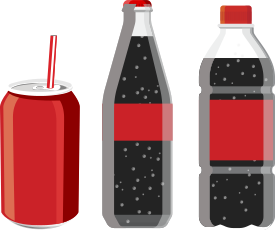
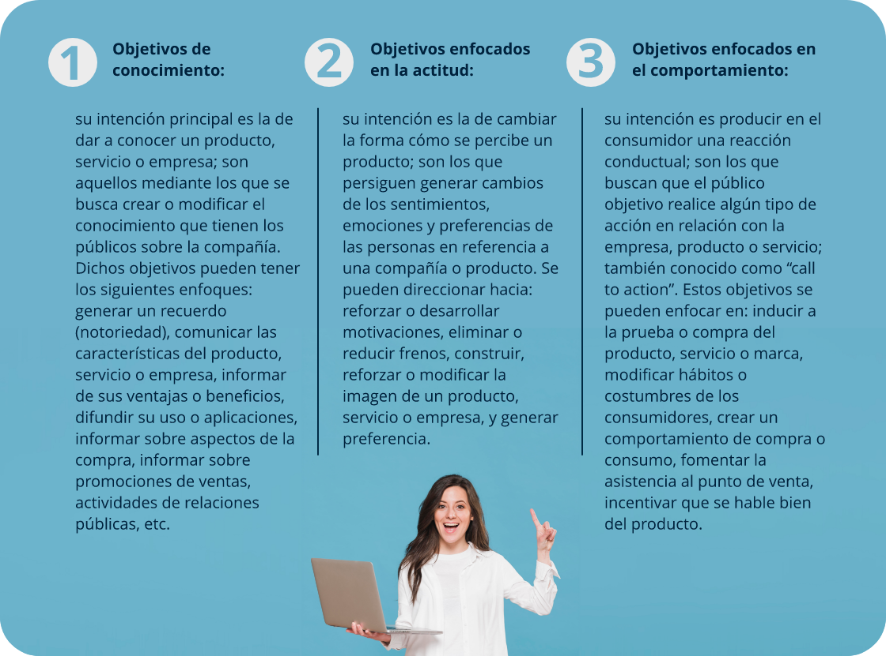

1. ¿Qué es una campaña publicitaria?
Una campaña publicitaria es un plan de comunicación, o parte de este, que se planea a corto o mediano plazo; actualmente, y debido a múltiples factores como el crecimiento del mercado, la llegada permanente de competidores, la globalización y la velocidad con la que llega la información, se planean a menor tiempo o con más frecuencia. Hoy en día, es menos usual ver campañas con permanencia mayor a tres meses en los medios, adicionalmente, las redes sociales permiten realizarlas con mucha más facilidad que antes, con inversiones menores y producciones más sencillas y personalizadas. No obstante, cualquier campaña, sin importar el producto o servicio que esté publicitando, sigue siendo un proceso de comunicación entre un anunciante y un consumidor, en el que intervienen además otros actores, como la agencia de publicidad, el freelancer o grupo creativo.
El desarrollo de una campaña publicitaria implica asuntos explorados anteriormente: la investigación, el brief y la identidad corporativa; dichos elementos, son la base para el proceso de comunicación y trazan la ruta para crear una conversación eficaz con el cliente. Es importante aclarar que existen muchos modelos de campaña publicitaria, prácticamente cada agencia de publicidad tiene uno propio y diferente; sin embargo, todos se acercan a un proceso muy similar con elementos estándar que se verán a continuación. Cabe aclarar, que algunos de los que se mencionarán, se profundizarán en otros materiales, por lo que los conceptos aquí expuestos son básicos.
1.1 Estructura de la campaña publicitaria
La estructura que se relaciona a continuación es estándar y contiene los elementos más relevantes, esto implica que existen métodos con otros puntos adicionales o que no se tienen en cuenta, o que se nombran de forma diferente:
El brief
Este documento se ha mencionado y expuesto ampliamente en otros materiales. Para este caso, el brief a desarrollar es el de campaña táctica, en el que se exponen componentes importantes para el desarrollo del mensaje. No obstante, en caso de que la campaña que se realiza es para una empresa con la que la agencia de publicidad, grupo creativo o freelancer no ha tenido contacto anteriormente, es recomendable realizar también el brief de primer contacto. Para una campaña, un brief debe responder a elementos básicos: ¿por qué se hace la campaña?, ¿qué se quiere decir en el mensaje publicitario?, ¿qué se busca exactamente que haga la agencia, grupo creativo o freelancer?
Dentro de los elementos más importantes del brief está el análisis de consumidor, descripción detallada del producto y análisis de la competencia.
Descripción del producto o servicio

Para la agencia, el grupo creativo o el freelancer, uno de los elementos que mejor proveen datos para el desarrollo de la campaña, es el producto mismo y resulta muy importante que la empresa no deje escapar ningún detalle en relación con este; en ocasiones, es necesario que quien va a realizar la parte creativa de la campaña firme un acta de confidencialidad, con el fin de que el empresario otorgue toda la información posible sobre procesos de fabricación, canales de distribución, área de influencia, datos de la industria, participación en el mercado, protocolo de prestación del servicio, materias primas, proveedores, etc. Toda esta información representa posibles textos de apoyo, datos relevantes para la decisión de compra o incluso la base del concepto final.
Línea de productos

Los productos de la empresa, por lo general tienen varias presentaciones, ya sea que se diferencien por su tamaño, sabor, aroma, olor, forma, tipo de empaque, entre otros aspectos. También se puede dar el caso de que la marca tenga una extensión; es decir, que bajo el mismo nombre se hayan creado productos diferentes, por ejemplo: el caso de la marca de una galleta que la utilizan para crear un helado y aprovechar su posicionamiento en el mercado, con el fin de generar ventas inmediatas. Es indispensable que el empresario entregue toda esta información a los creativos que van a diseñar la campaña, pues de allí pueden surgir datos importantes para la comunicación, textos de apoyo, acciones de marketing, activaciones de marca o cualquier otro recurso útil para persuadir al mercado objetivo.
Mercado objetivo
Como vimos en materiales anteriores, tal vez el aspecto más relevante del proceso de la comunicación sea el conocimiento que se tenga del consumidor. En este punto los creativos deben ser muy enfáticos con el empresario, ya que es muy común que para el dueño de una Mipyme, la cobertura del mercado sea muy amplia y no haya una información clara del análisis del consumidor; por eso es muy importante que se apliquen en detalle las variables demográficas y se realice su debida cuantificación; adicional y más importante aún, individualizar el mercado a través de las características psicográficas, pues con las cuales se crean las estrategias más efectivas de comunicación.
Elementos de identidad corporativa
Para la realización de una estrategia de comunicación que involucra el desarrollo de piezas y el uso de diferentes medios, es vital que la marca sea presentada y expuesta de acuerdo con los lineamientos del manual de identidad; teniendo en cuenta dentro de este documento: los criterios relacionados con el color, el uso de tipografías, el manejo del logo y su ubicación en las piezas gráficas, las áreas de reserva, los tamaños mínimos y variaciones permitidas para la marca, entre otros. No es definirlos o alterarlos para la campaña y favorecer el posicionamiento, toda vez que de esta forma se estandariza el manejo de la marca, creando en el consumidor una imagen definida con elementos que asocia a esta.
Personalidad de marca
Como ya se indicó, el desarrollo de una estrategia de comunicación debe ir de la mano con la identidad corporativa de la empresa. La identidad está compuesta de múltiples elementos, entre ellos la personalidad de marca, la cual contiene aspectos del mercado que generan empatía entre el producto y los consumidores; con base en esta información se puede definir el look de la comunicación, el tipo de lenguaje a utilizar, el tipo de imágenes o ilustraciones que deberán contener las piezas gráficas o audiovisuales que incluirá la campaña, debido a que la personalidad de marca está ligada a los aspectos cualitativos del mercado; es decir, a sus características psicográficas.
Objetivos de comunicación (enfocados en el mensaje)
De acuerdo con Vilajoana, Jiménez, González y Vila (2014):
Un objetivo de comunicación se define como aquel objetivo que una organización se propone conseguir a través de sus procesos comunicativos o de sus comunicaciones; es decir, el resultado esperado de una decisión de marketing que un anunciante busca a través de la campaña publicitaria.
Los objetivos de comunicación se pueden direccionar a varios enfoques, de acuerdo con las necesidades de comunicación de la empresa. Por tal motivo, basados en los autores mencionados, se indican los siguientes:

Un objetivo de comunicación debe responder a las siguientes características básicas:
Glosario
Brief: documento diagnóstico y estratégico que realizan las empresas, con el fin de llevar a cabo procesos de comunicación y promoción.
Estrategia de mercadeo:Conjunto de tácticas que se estructuran con base en los elementos de la mezcla del mercadeo, con el propósito de desarrollar el programa correspondiente.
Marketing:disciplina que estudia las conductas y necesidades de los miembros de un mercado y su entorno, con el fin de generar productos o servicios que los satisfagan y obtener utilidades con su comercialización.
Mercado: conjunto de variables y factores que afectan de forma positiva o negativa el proceso de producción, comercialización y promoción de los productos o servicios de las empresas.
Mercado meta:conjunto de miembros del mercado que tienen como característica principal el tener necesidades, gustos y conductas aptas para adquirir un producto o servicio.
Nicho de mercado:es un grupo reducido de personas, empresas u organizaciones, con necesidades y/o deseos específicos, también puede estar conformado por una pequeña zona geográfica o un grupo de empresas.
Posicionamiento:es el lugar que ocupa un producto en la mente de los consumidores. También es la percepción que tienen los consumidores o usuarios de un producto o servicio.
Segmentación de mercado: división que se hace del mercado, para formar grupos específicos con características demográficas y psicográficas similares.
Referencias bibliográficas
Bonta, P. y Farber, M. (2002). 199 preguntas sobre Marketing y Publicidad. Grupo Editorial NORMA.
Cervera, Á. F. (2015). Comunicación Total. Midac Digital.
DANE. (s. f.). Proyecciones de Población. Consultado el 21 de mayo de 2019.https://cutt.ly/UyIgKPo
Fernández, R. (2009). Segmentación de Mercados (3.a ed.). Mc Graw Hill.
Kotler, P. & Armstrong, G. (2012). Marketing. Pearson.
Merino, M. J. y Pintado, T. (2015). La investigación de mercados, claves para conocer los insights del consumidor. Esic editorial.
Velásquez, L. F. (2020, 28 de enero). 8 tipos de personalidad, Resúmenes de Derecho. Docsityhttps://cutt.ly/WyIhy9m
Real Academia Española. (2019). Diccionario de la lengua española (edición del tricentenario)https://cutt.ly/QyIgjkj
Vilajoana, A., Jiménez, M., González, Z. y Vila, J. (2014). ¿Cómo diseñar una campaña de publicidad? Editorial UOC.
Fotografías y vectores tomados de https://www.shutterstock.com/ y https://www.freepik.es/
Licencia Creative Commons
CC BY-NC-SA
Ver licencia.